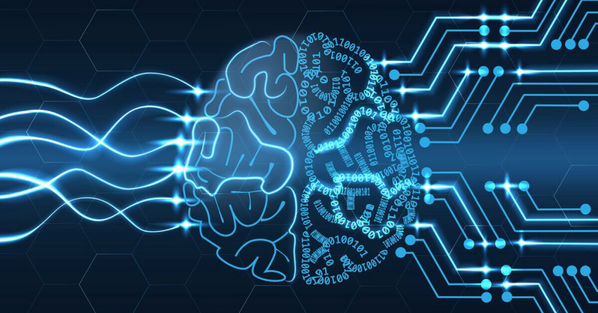

|
Mühendisler tarafından geliştirilen bir yapay sinir ağı, insan beyninin çalışma şeklini taklit ederek, insanların günlük hayatlarında yapabilecekleri birçok işlemi yapabilmektedir. Bu yapay sinir ağı, insanların evlerinde bulunan tüm teknolojik cihazları kontrol etmelerine yardımcı olurken, aynı zamanda bu cihazların güvenliğini de sağlamaya yardımcı olmaktadır. Bu sayede, insanlar hareket halindeyken de evlerinde bulunan cihazları kontrol edebilir ve evlerinde bulunan tüm teknolojik cihazları daha güvenli bir şekilde kullanabilirler.

Bu yapay sinir ağı, insan beyninin çalışma şeklini taklit ederek, insanların günlük hayatlarında yapabilecekleri birçok işlemi yapabilmektedir.
Bu yapay sinir ağının oluşturulması, mühendisler tarafından insan beyninin nasıl çalıştığı incelenerek gerçekleştirilmiştir. Bu inceleme sonucunda, insan beyninin çalışma şeklini taklit eden bir yapı oluşturulmuştur. Bu yapı, daha sonra yapay sinir ağı olarak geliştirilmiş ve insanların günlük hayatlarında yapabilecekleri birçok işlemi yapabilecek hale getirilmiştir.
ETİKETLER: #yapaysiniragi #saglikteknolojileri #siniraglari #yapayzeka
|